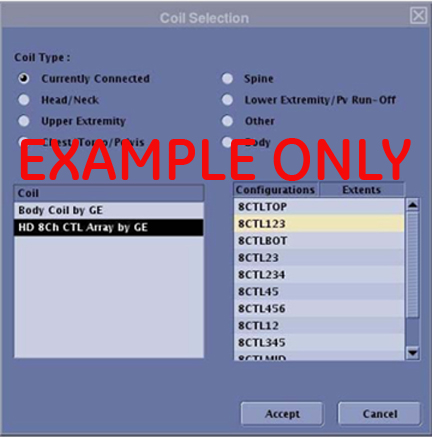

- 00000018WIA30AECE20GYZ
- id_131072643.0
- Aug 29, 2019 1:46:12 AM
3.0T Breast Array Coil Troubleshooting
Personnel Requirements
| Required Persons | Preliminary Requirements | Procedure | Finalization |
|---|---|---|---|
| 1 | Timing N/A | 30 min. | Timing N/A |
Overview
| Notice | |
|---|---|
The following tips can be used to troubleshoot common problems with the 3.0T HD Breast Array Coil.
Preliminary Requirements
Tools and Test Equipment
| Item | Effectivity | Qty. | Part Number |
| Digital Volt Meter | - | 1 | - |
| 10 cm Spherical Unified Phantom | (For Unified Phantom Kit) | 2 | 2360034 |
| Unified Phantom Positioner, Breast | (For Unified Phantom Kit) | 1 | 5343432 |
Required Conditions
For Discovery MR750w GEM, the following configuration names must be installed to run the SNR tool:
-
HD BreastRight
-
HD BreastLeft
Procedure
Receiving No Signal
Problem: Unable to pre-scan or scanning and receiving no signal.
Possible Solution:
-
Verify that the port used to plug in the coil either has either a green lit LED (Port A or Port B) or a green lock (Port P1, P2, P3 or P4) indicated. This indicates the coil is properly plugged into the system.
-
Verify that the system has correctly detected the coil by checking in the Currently Connected window in the GUI to select coils in Rx as shown in the example below.

-
Verify that the landmark is correct (need link) and that the cradle has not unlatched.
-
Verify that the scan locations and any FOV offsets are correct.
-
Perform a Continuity Check (must be performed by an GE-authorized Service Engineer) on the output cable. (Refer to Output Cable Check.)
-
Verify that the coil is positioned with the cable exiting toward the bore.
-
Verify that the cable is not looped or crossed.
There may also be a problem at the system interface port. Try scanning in both ports. If still not able to obtain a signal, try to scan (transmit and receive) with the body coil.
| Notice | |
|---|---|
-
If still not able to receive a signal, the problem probably lies with the MR system.
-
If the scan completes successfully, there may be a problem with the breast coil.
If unable to scan with the substitute coil, there may be a system problem related to this particular coil type.
Image Quality
Problem: Poor IQ, shaded images or SNR fails.
Possible Solution:
-
Perform a continuity check on the output cable (Output Cable Check). The continuity check must be performed by a GE authorized Service Engineer.
-
Verify that there are no loops in the cables.
-
Verify that no metal or ferromagnetic objects are close to the coil, patient or magnet (i.e., safety pin, hair pin).
-
Verify that the coil is properly positioned.
-
Verify that center frequency is within the frequency adjustment range for the system.
-
Verify that the R1, R2 and TG values from the pre-scan are within normally expected ranges.
If not done already, perform the Multi-Coil Quality Assurance Tool.
-
If the values obtained do not fall within normal operating parameters, investigate further by performing a phantom scan with the body coil.
Notice -
If the same problem remains, there is probably an MR system problem.
-
If the body coil scan is satisfactory, acquire a scan using another coil of the exact same type (receive-only, phased array) and the same system coil selection.
-
If the image quality is visibly improved, there may be a problem with the breast coil. Contact GE for further assistance.
-
If the image quality still suffers, there may be a system problem related to imaging with this type of coil.
Artifacts
Problem: There is a black line or signal void on the image.
Possible Solution:
Verify that there is no metal present in the area being scanned in or on the patient.
Output Cable Check
Before removing the cable assembly from the coil, visually inspect all coaxial connectors and pins on the system plug. If any are broken with deformed/recessed pins or coaxial connectors, replace the cable assembly.
-
Remove the cable assembly from coil, refer to the 3.0T Breast Array Coil System Cable Replacement.
-
RF Signal Channels Check: The center pins of the System Connector receive coaxial connectors are extremely fragile. Do not attempt to make any measurements at these center pins.


The following procedure will rule out a short to Ground (GND) for each of the signal pins detailed in the following table. This check does not determine continuity for each of the MC signal connections. With the coil cable disconnected, use a multi-meter (set to Continuity) to ensure an open circuit condition exists between the designated pin and GND for each signal channel listed in the table below.
| Coil Side Connector RF GND Shield | Coil Side Connector RF Center Pin |
|---|---|
| J8 | J8 |
| J7 | J7 |
| J5 | J5 |
| J6 | J6 |
| J15 | J15 |
| J16 | J16 |
| J14 | J14 |
| J13 | J13 |
If one or more of the readings indicate a short, replace the cable. If all of the above readings indicate an open circuit condition, proceed to the DC Lines Continuity Check. With the coil cable disconnected, use a multi-meter (set to Continuity) to determine continuity between the designated pins for each control channel in the table below.
| System Side Connector Pin | Coil Side Connector |
| F1 | P3-1 |
| F2 | P3-2 |
| F3 | P3-4 |
| F4 | P3-3 |
| F5 | P4-2 |
| F6 | P4-1 |
| F7 | P4-3 |
| F8 | P4-4 |
| I3 | P6-2 |
| I6 | P6-1 |
| I7 | P5-2 |
| I8 | P5-1 |
If any pair indicates an open, replace the output cable.
Additional diagnostics can be run using: